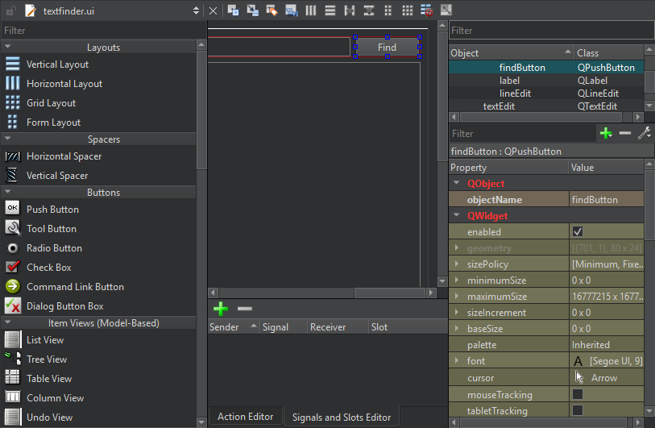
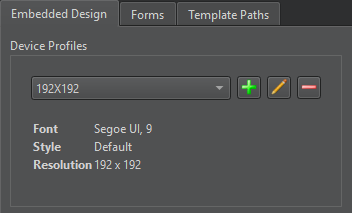
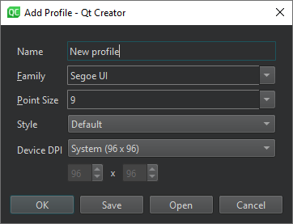

Qt Designer
Qt Creator automatically opens all .ui files in the integrated Qt Designer, in Design mode.

Widgets and forms created with Qt Designer are integrated seamlessly with programmed code by using the Qt signals and slots mechanism that allows you to easily assign behavior to graphical elements. All properties set in Qt Designer can be changed dynamically within the code. Furthermore, features such as widget promotion and custom plugins allow you to use your own widgets with Qt Designer.
For more information about Qt Designer, see the Qt Designer Manual.
Generally, the integrated Qt Designer has the same functions as the standalone Qt Designer. The following sections describe the differences.
The following video shows how to use the integrated Qt Designer to create a small Qt Widgets-based application:
Code Editor Integration
To switch between forms (Design mode) and code (Edit mode), press Shift+F4.
You can use Qt Creator to create stub implementations of slot functions. In the Design mode, right-click a widget to open a context menu, and then select Go to Slot. Select a signal in the list to go to an existing slot function or to create a new slot function.
Managing Image Resources
In standalone Qt Designer, image resources are created using the built-in Resource Editor. In Qt Creator, .ui files are usually part of a project, which may have several resource files (.qrc). They are created and maintained by using the Qt Creator Resource Editor. The Qt Designer Resource Editor is de-activated and the image resources are displayed in the Qt Designer Resource Browser.
To open resource files from the code editor, select Follow Symbol Under Cursor in the context menu or press F2 when the cursor is over a string literal.
Specifying Settings for Qt Designer
You can drag and drop the views in Qt Designer to new positions on the screen.
To specify settings for Qt Designer:
- Select Preferences > Designer.
- Specify embedded device profiles, that determine style, font, and screen resolution, for example, in Embedded Design.
- Specify settings for the grid and previewing forms in Forms.
- Specify an additional folder for saving templates in Template Paths.
To preview the settings, select Tools > Form Editor > Preview, or press Alt+Shift+R.
Previewing Forms Using Device Profiles
A device profile is a set of configuration files that describe a mobile device. It includes a border image that surrounds the form and depicts a mobile device with its buttons.
To preview your form using device profiles, select Tools > Form Editor > Preview In, and then select a device profile.
Adding Device Profiles
To add device profiles:
- Preferences > Designer.

- In Embedded Design, select
 to open the Add Profile dialog.
to open the Add Profile dialog.
- In Name, enter a name for the device. The name is displayed as an option in Preview In.
- In Family, select the font to use.
- In Point Size, select the font size.
- In Style, select one of the predefined styles.
- In Device DPI, select one of the predefined DPI values or User defined to specify a custom value.
- Select OK to add the device profile to the list.
To import device profiles from .qdp files, select Open. To save them as .qdp files, select Save.
See also Creating a Qt Widget Based Application and Adding Qt Designer Plugins.